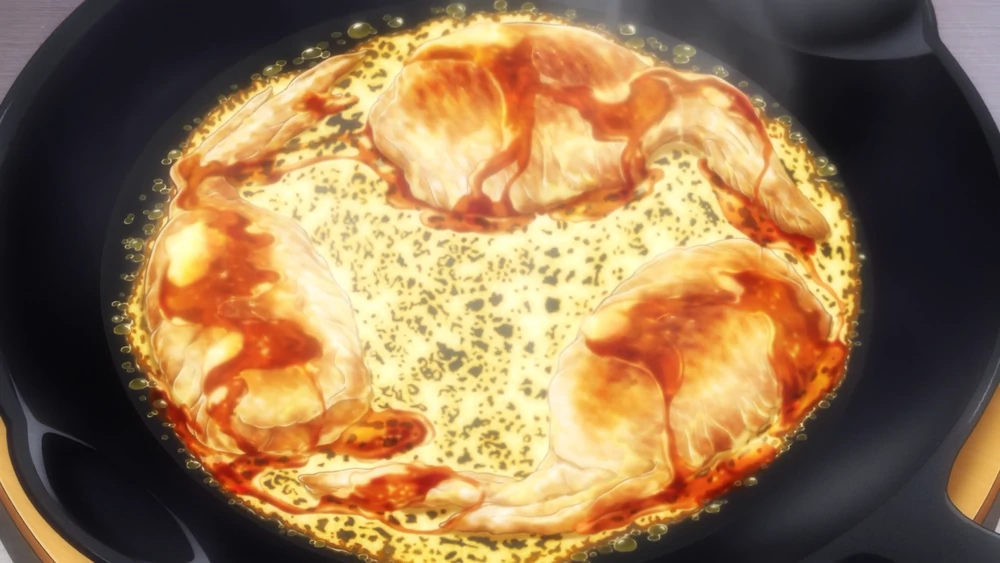

Cheese-Feathered Hanetsuki Gyōza

Description
Gyōza are Japanese pan-fried dumplings quite similar to Chinese potstickers.
Ingridinets
Chicken Wings
Parmesan Cheese
Water
Vegetable Oil
Cabbage
Steps:
Prepare the ingridients
Combine the beef, shrimp, cabbage, ginger, garlic, salt, white pepper, and the oils into a large bowl.
Mix everything together well with your hands, making sure the mixture isn't lumpy or uneven
Take a gyoza wrapper and place a small spoonful of the mixture in the middle.
Oil and heat a skillet on the stove.
Fry the dumplings for about two minutes, then reduce the heat.
Add about half a cup of water to the skillet and cover it with a pan lid
Place the dumplings onto a plate or serving bowl and serve with dipping sauce or soy sauce (shoyu)
back to top
home